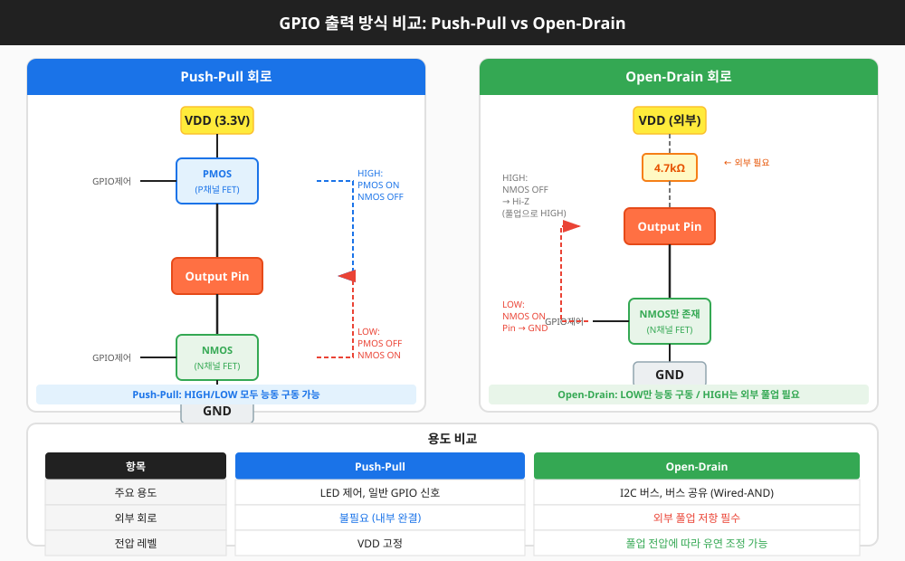
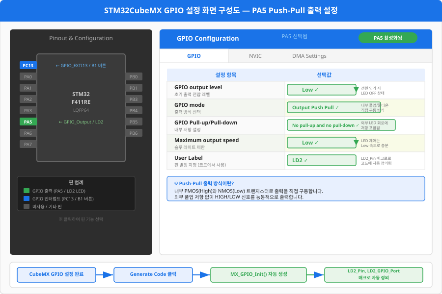
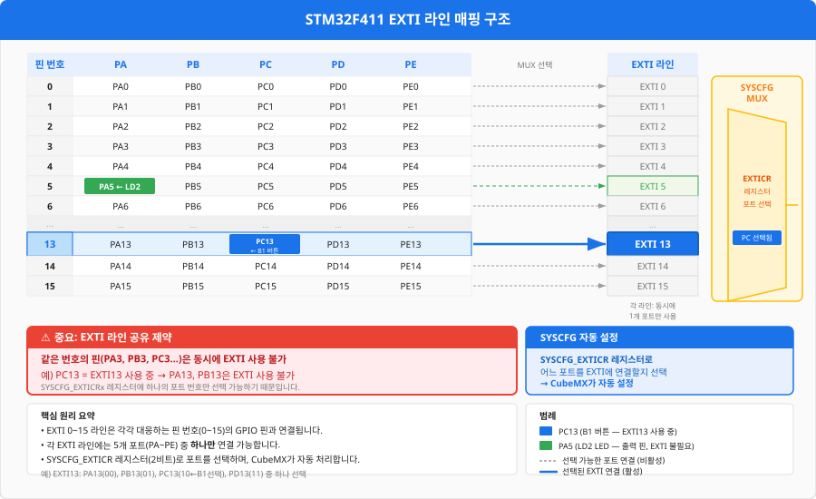
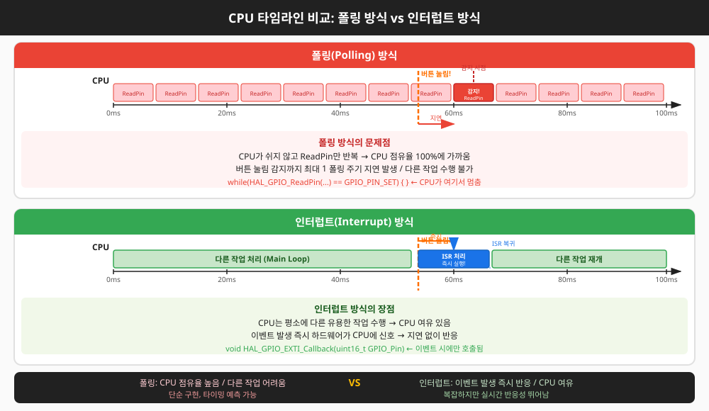

마이크로컨트롤러와 외부 세계를 연결하는 첫 번째 관문 — 핀 하나로 세상을 켜고 끄는 법을 배웁니다.
Ch01은 교재의 첫 챕터입니다. 아래 사전 지식이 있으면 더 빠르게 이해할 수 있지만, 없어도 본문에서 필요한 개념을 모두 설명합니다.
이 챕터를 마치면 프로젝트 v0.1이 완성됩니다: NUCLEO 보드의 파란 버튼(B1)을 누를 때마다 초록 LED(LD2)가 켜지고 꺼집니다.
이 챕터를 완료하면 다음을 할 수 있습니다.
HAL_GPIO_WritePin, TogglePin, ReadPin으로 LED와 버튼 제어 코드를 작성할 수 있다.프로그래밍을 배울 때 화면에 "Hello, World!"를 출력하듯, 임베디드 시스템에서의 첫 걸음은 LED를 켜는 것입니다. 하지만 단순히 "불이 켜졌다"에서 멈추면 안 됩니다. 왜 그 방식으로 연결해야 하는지, 왜 다른 방식은 안 되는지를 이해해야 실무에서 회로 설계자와 대화하고, 트러블슈팅을 할 수 있습니다. 이 절에서는 GPIO(General Purpose Input/Output, 범용 입출력) 출력 모드의 두 가지 핵심 방식인 Push-Pull과 Open-Drain의 동작 원리를 깊이 파헤칩니다.
MCU(Micro Controller Unit, 마이크로컨트롤러)의 핀은 기본적으로 HIGH(3.3V) 또는 LOW(0V) 두 가지 전압 상태를 출력할 수 있습니다. STM32의 GPIO 출력 모드에는 크게 두 가지가 있습니다.
Push-Pull 출력 드라이버의 핵심은 두 개의 MOSFET(Metal-Oxide-Semiconductor Field-Effect Transistor, 금속산화막 반도체 전계효과 트랜지스터)입니다.
소프트웨어가 HAL_GPIO_WritePin(GPIOA, GPIO_PIN_5, GPIO_PIN_SET)을 호출하면,
MCU 내부의 출력 레지스터(ODR, Output Data Register)의 해당 비트가 1로 설정됩니다.
이 신호가 PMOS(P채널 금속산화물 반도체 트랜지스터, 전원 쪽 스위치) 게이트에 전달되어 PMOS가 켜지고,
VDD(전원 공급 전압, 3.3V)에서 핀으로 전류가 흐릅니다 — 이것이 "Push"입니다.
반대로 LOW를 출력하면 NMOS(N채널 금속산화물 반도체 트랜지스터, GND 쪽 스위치)가 켜져
핀에서 GND로 전류가 흡수됩니다 — 이것이 "Pull"입니다.

Open-Drain은 주로 세 가지 상황에서 사용됩니다.
NUCLEO-F411RE 보드에는 사용자 LED인 LD2(초록)가 PA5 핀에 연결되어 있습니다. PA5 → 저항(510Ω) → LED → GND 순서로 연결되어 있어, PA5가 HIGH(3.3V)일 때 LED가 켜집니다. 이것을 액티브 하이(Active High)라고 합니다.
이 회로에서는 MCU가 전류를 공급(source)해야 하므로 Push-Pull 모드가 적합합니다. 만약 Open-Drain을 사용한다면 HIGH 상태에서 내부 드라이버가 없어 LED가 제대로 켜지지 않습니다.
STM32 HAL(Hardware Abstraction Layer, 하드웨어 추상화 계층)은 GPIO를 제어하는 세 가지 핵심 함수를 제공합니다.
/* gpio_led_basic.c — PA5 LED 기본 제어 예제 */
/* LOG는 Ch02에서 추가됩니다 */
#include "main.h"
/* PA5 = LD2 (액티브 하이: GPIO_PIN_SET = LED 켜짐) */
/**
* @brief LED를 켜는 함수
*/
void led_on(void)
{
/* GPIO_PIN_SET = 1 = HIGH = 3.3V 출력 → LED 켜짐 */
HAL_GPIO_WritePin(GPIOA, GPIO_PIN_5, GPIO_PIN_SET);
}
/**
* @brief LED를 끄는 함수
*/
void led_off(void)
{
/* GPIO_PIN_RESET = 0 = LOW = 0V 출력 → LED 꺼짐 */
HAL_GPIO_WritePin(GPIOA, GPIO_PIN_5, GPIO_PIN_RESET);
}
/**
* @brief LED 상태를 반전시키는 함수 (켜져 있으면 끄고, 꺼져 있으면 켜기)
*/
void led_toggle(void)
{
HAL_GPIO_TogglePin(GPIOA, GPIO_PIN_5);
}
/**
* @brief 블링크 예제 — 500ms 간격으로 LED 점멸
*/
void led_blink_blocking(void)
{
while (1)
{
led_toggle();
HAL_Delay(500); /* 500ms 대기 (블로킹) */
}
}
STM32 HAL에서 GPIO_PIN_5는 단순히 숫자 5가 아닙니다. 이것은 비트마스크(bitmask)입니다.
GPIO_PIN_5는 0x0020(2진수 0000 0000 0010 0000)으로 정의되어 있습니다.
5번째 비트(0부터 시작)가 1로 설정된 값입니다.
GPIO 포트(GPIOA)는 0번부터 15번까지 16개의 핀을 가집니다. HAL은 이 16개 핀을 16비트 마스크로 관리합니다.
HAL_GPIO_WritePin(GPIOA, GPIO_PIN_5 | GPIO_PIN_3, GPIO_PIN_SET)처럼 비트 OR 연산으로
여러 핀을 동시에 제어할 수도 있습니다.
LED를 켜는 코드 한 줄을 작성하기 전에, MCU는 해당 핀이 어떤 역할을 하는지 알아야 합니다. 핀을 입력으로 쓸지 출력으로 쓸지, 속도는 얼마로 할지, 초기 상태는 어떻게 할지 — 이 모든 설정이 초기화 코드에 담겨야 합니다. STM32CubeMX는 GUI(Graphical User Interface, 그래픽 사용자 인터페이스)로 이 설정을 손쉽게 생성해 주는 도구입니다. 이 절에서는 CubeMX가 생성한 코드를 한 줄씩 해부하여 "자동 생성된 코드도 정확히 이해하고 쓰는" 능력을 기릅니다.
STM32에서 GPIO를 사용하려면 먼저 해당 GPIO 포트에 클록(Clock, 동작 신호)을 공급해야 합니다. STM32는 전력 소모를 줄이기 위해 사용하지 않는 주변장치(Peripheral, 내부 장치)의 클록을 기본적으로 끕니다. RCC(Reset and Clock Control, 리셋 및 클록 제어) 레지스터에서 해당 포트의 클록을 활성화해야 합니다.
/* CubeMX가 생성하는 MX_GPIO_Init() 함수 분석 */
/* LOG는 Ch02에서 추가됩니다 */
static void MX_GPIO_Init(void)
{
GPIO_InitTypeDef GPIO_InitStruct = {0}; /* 초기화 구조체, 0으로 초기화 */
/* ── 1단계: 클록 활성화 ─────────────────────────────── */
/* GPIOA 포트 클록 켜기 — PA5 (LD2)를 사용하기 위해 필요 */
__HAL_RCC_GPIOA_CLK_ENABLE();
/* GPIOC 포트 클록 켜기 — PC13 (B1 버튼)을 사용하기 위해 필요 */
__HAL_RCC_GPIOC_CLK_ENABLE();
/* ── 2단계: PA5 = LD2 출력 설정 ────────────────────── */
/* LED 초기 상태: 꺼짐 (GPIO_PIN_RESET) */
HAL_GPIO_WritePin(GPIOA, GPIO_PIN_5, GPIO_PIN_RESET);
GPIO_InitStruct.Pin = GPIO_PIN_5; /* 대상 핀: PA5 */
GPIO_InitStruct.Mode = GPIO_MODE_OUTPUT_PP; /* 출력 모드, Push-Pull */
GPIO_InitStruct.Pull = GPIO_NOPULL; /* 내부 풀업/풀다운 없음 */
GPIO_InitStruct.Speed = GPIO_SPEED_FREQ_LOW; /* 슬루율 최저 (LED는 빠를 필요 없음) */
HAL_GPIO_Init(GPIOA, &GPIO_InitStruct);
/* ── 3단계: PC13 = B1 버튼 입력 설정 ───────────────── */
GPIO_InitStruct.Pin = GPIO_PIN_13; /* 대상 핀: PC13 */
GPIO_InitStruct.Mode = GPIO_MODE_INPUT; /* 입력 모드 */
GPIO_InitStruct.Pull = GPIO_NOPULL; /* 보드에 외부 풀업 있으므로 내부 불필요 */
HAL_GPIO_Init(GPIOC, &GPIO_InitStruct);
/* Speed 멤버는 입력 모드에서 무시됨 */
}
GPIO_InitTypeDef는 핀 하나(또는 여러 핀)의 동작 방식을 기술하는 구조체입니다.
멤버 하나하나가 실제 하드웨어 레지스터 비트에 대응합니다.
GPIO_PIN_5 | GPIO_PIN_6처럼 여러 핀을 한 번에 설정할 수 있습니다.GPIO_MODE_OUTPUT_PP(Push-Pull 출력), GPIO_MODE_OUTPUT_OD(Open-Drain 출력), GPIO_MODE_INPUT(입력), GPIO_MODE_AF_PP(대체 기능, Alternate Function), GPIO_MODE_ANALOG(아날로그) 등이 있습니다.GPIO_PULLUP, GPIO_PULLDOWN, GPIO_NOPULL 중 선택합니다.GPIO_SPEED_FREQ_VERY_HIGH를 사용합니다. LED처럼 느린 신호는 LOW로도 충분하고 EMI(전자기 간섭)를 줄일 수 있습니다.GPIO_AF7_USART1).STM32CubeIDE에서 새 프로젝트를 만들고 GPIO를 설정하는 순서입니다.
LD2 입력
GPIO Speed를 높이면 출력 신호의 상승/하강 시간(rise/fall time)이 짧아집니다.
이는 빠른 통신에 유리하지만, 급격한 전류 변화는 라인 임피던스와 결합해 오버슈트(overshoot),
언더슈트(undershoot), 링잉(ringing) 현상을 유발하고 EMI(Electro-Magnetic Interference, 전자기 간섭)를
증가시킵니다. LED 같은 저속 신호에는 항상 GPIO_SPEED_FREQ_LOW를 사용하세요.
LED를 켜고 끄는 것은 MCU가 세상에 말을 거는 행위입니다. 버튼을 읽는 것은 세상이 MCU에게 말하는 행위입니다. 이 절에서는 GPIO 입력 모드의 동작 원리와, 가장 직관적인 버튼 읽기 방법인 폴링(Polling, 주기적 확인)을 다룹니다. 그리고 버튼 하드웨어의 물리적 특성에서 오는 디바운싱(debouncing) 문제를 이해하고 소프트웨어로 해결하는 방법을 배웁니다.
입력 모드에서 MCU는 핀 전압을 감지합니다. STM32의 GPIO 입력 경로는 핀 → 슈미트 트리거(Schmitt Trigger, 노이즈 제거용 히스테리시스 회로) → 입력 데이터 레지스터(IDR, Input Data Register) 순서로 이루어집니다.
소프트웨어에서 HAL_GPIO_ReadPin()을 호출하면 IDR의 해당 비트 값을 읽어옵니다.
NUCLEO-F411RE의 B1 버튼(파란색)은 PC13에 연결되어 있습니다. 보드 회로를 보면:
GPIO_PIN_SETGPIO_PIN_RESET
이처럼 버튼을 누를 때 LOW가 되는 방식을 액티브 로우(Active Low)라고 합니다.
NUCLEO 보드 내부에 이미 외부 풀업 저항이 있으므로, CubeMX에서 Pull 설정을 GPIO_NOPULL로
해야 합니다. 내부 풀업까지 추가하면 신호 레벨에 영향을 줄 수 있습니다.
폴링(Polling)은 메인 루프에서 주기적으로 입력 상태를 확인하는 가장 단순한 방법입니다.
/* polling_button.c — 폴링 방식 버튼 → LED 제어 */
/* LOG는 Ch02에서 추가됩니다 */
#include "main.h"
/* B1: PC13, 액티브 로우 (눌리면 GPIO_PIN_RESET) */
/* LD2: PA5, 액티브 하이 (켜려면 GPIO_PIN_SET) */
/**
* @brief 버튼 눌림 여부 반환 (액티브 로우 처리 포함)
* @return 1: 눌림, 0: 안 눌림
*/
uint8_t button_is_pressed(void)
{
/* PC13이 LOW(RESET)면 버튼이 눌린 것 */
return (HAL_GPIO_ReadPin(GPIOC, GPIO_PIN_13) == GPIO_PIN_RESET) ? 1 : 0;
}
/**
* @brief 폴링 방식 메인 루프 — 버튼 누르는 동안 LED ON
* 문제: 빠른 진동(바운싱)으로 인해 LED가 깜빡일 수 있음
*/
void polling_main_loop_v1(void)
{
while (1)
{
if (button_is_pressed())
{
/* 버튼이 눌려 있는 동안 LED 켜기 */
HAL_GPIO_WritePin(GPIOA, GPIO_PIN_5, GPIO_PIN_SET);
}
else
{
/* 버튼이 안 눌려 있으면 LED 끄기 */
HAL_GPIO_WritePin(GPIOA, GPIO_PIN_5, GPIO_PIN_RESET);
}
}
}
기계식 버튼을 누르면 접점(contact)이 딱 한 번 닫히는 것이 아니라, 수 밀리초(ms) 동안 여러 차례 튀면서(bounce) 연결/해제를 반복합니다. MCU는 이 미세한 진동을 여러 번의 버튼 누름으로 인식합니다. 이것이 스위치 바운싱(switch bouncing)이고, 이를 제거하는 기술이 디바운싱(debouncing)입니다.
/* debounce_polling.c — 소프트웨어 디바운싱 포함 폴링 */
/* LOG는 Ch02에서 추가됩니다 */
#include "main.h"
#define DEBOUNCE_TIME_MS 20U /* 바운스 안정화 대기 시간 (ms) */
/**
* @brief 디바운싱 포함 버튼 눌림 감지 (엣지 감지 방식)
* @return 1: 이번 프레임에 버튼이 새로 눌림, 0: 아님
*/
uint8_t button_detect_press(void)
{
static uint8_t prev_state = 0; /* 이전 상태 */
static uint32_t last_change_ms = 0; /* 마지막 상태 변화 시각 */
uint8_t cur_raw = (HAL_GPIO_ReadPin(GPIOC, GPIO_PIN_13) == GPIO_PIN_RESET) ? 1 : 0;
uint32_t now_ms = HAL_GetTick(); /* 부팅 후 경과 시간 (ms) */
/* 상태가 변했고, 마지막 변화로부터 DEBOUNCE_TIME_MS 이상 지났으면 유효 */
if (cur_raw != prev_state)
{
if ((now_ms - last_change_ms) >= DEBOUNCE_TIME_MS)
{
prev_state = cur_raw;
last_change_ms = now_ms;
if (cur_raw == 1)
{
return 1; /* 유효한 버튼 누름 감지 */
}
}
}
return 0;
}
/**
* @brief 디바운싱 포함 폴링 메인 루프 — 버튼 누름마다 LED 토글
*/
void polling_main_loop_v2(void)
{
while (1)
{
if (button_detect_press())
{
HAL_GPIO_TogglePin(GPIOA, GPIO_PIN_5); /* LED 토글 */
}
/* 다른 작업 수행 가능 (단, HAL_Delay 없이) */
}
}
폴링은 구현이 단순하지만 CPU가 계속 버튼을 확인해야 합니다. 버튼 이벤트가 드물게 발생하는 경우, 대부분의 폴링 사이클은 "아무 일 없음"을 확인하는 데 낭비됩니다. 더 심각한 문제는 메인 루프가 오래 걸리는 작업을 수행하는 동안 버튼 누름을 놓칠 수 있다는 점입니다. 이 문제를 해결하는 것이 EXTI(External Interrupt, 외부 인터럽트)입니다. 이 절에서는 EXTI의 동작 원리, 엣지 트리거 설정, 그리고 인터럽트 우선순위를 제어하는 NVIC의 개념을 배웁니다.
인터럽트(Interrupt, 인터럽트)는 하드웨어 이벤트가 발생했을 때 CPU에게 "지금 하던 일을 잠깐 멈추고 이것을 먼저 처리하라"고 알리는 신호입니다. CPU는 현재 실행 위치를 저장하고, ISR(Interrupt Service Routine, 인터럽트 서비스 루틴)이라는 특별한 함수를 실행한 뒤, 원래 위치로 돌아와 작업을 계속합니다.
STM32의 EXTI(External Interrupt/Event Controller, 외부 인터럽트/이벤트 컨트롤러)는 GPIO 핀의 전압 변화를 인터럽트 요청으로 변환합니다. STM32F411은 EXTI 라인 0~15를 가지며, 각 라인은 해당 번호의 GPIO 핀에 매핑됩니다.

EXTI는 신호의 어느 시점에 인터럽트를 발생시킬지 세 가지로 선택할 수 있습니다.
여러 인터럽트가 동시에 발생하면 어떤 것을 먼저 처리할까요? 이를 결정하는 것이 NVIC(Nested Vectored Interrupt Controller, 중첩 벡터 인터럽트 컨트롤러)입니다. "Nested(중첩)"라는 이름처럼, 높은 우선순위 인터럽트는 낮은 우선순위 ISR 실행 중에도 선점할 수 있습니다.
STM32의 NVIC는 4비트(0~15)로 우선순위를 표현합니다. 이 4비트를 PreemptPriority(선점 우선순위)와
SubPriority(부선점 우선순위)로 어떻게 나눌지를 결정하는 것이 우선순위 그룹(Priority Group)입니다.
CubeMX는 기본적으로 NVIC_PRIORITYGROUP_4를 사용하는데, 이는 4비트 모두를
PreemptPriority에 할당합니다(SubPriority 없음). 즉 우선순위 값은 0~15로, 숫자가 작을수록 높은 우선순위입니다.
/* EXTI + NVIC CubeMX 생성 코드 분석 */
/* LOG는 Ch02에서 추가됩니다 */
static void MX_GPIO_Init(void)
{
GPIO_InitTypeDef GPIO_InitStruct = {0};
__HAL_RCC_GPIOC_CLK_ENABLE();
/* PC13 = EXTI 인터럽트 입력 설정 */
GPIO_InitStruct.Pin = GPIO_PIN_13;
GPIO_InitStruct.Mode = GPIO_MODE_IT_FALLING; /* 하강 엣지(버튼 누름)에 인터럽트 */
GPIO_InitStruct.Pull = GPIO_NOPULL; /* 보드 내부 풀업 있음 */
HAL_GPIO_Init(GPIOC, &GPIO_InitStruct);
/* EXTI15_10_IRQn: EXTI10~15번 라인이 공유하는 인터럽트 핸들러 */
/* PC13 = EXTI13 → EXTI15_10_IRQn을 사용 */
HAL_NVIC_SetPriority(EXTI15_10_IRQn, 5, 0); /* PreemptPriority=5, SubPriority=0 */
/* SysTick = Priority 15(최저, HAL 기본값). EXTI는 5~10 범위 권장. 0은 긴급용 예약. */
HAL_NVIC_EnableIRQ(EXTI15_10_IRQn);
}
/* stm32f4xx_it.c — IRQ 핸들러 (자동 생성) */
void EXTI15_10_IRQHandler(void)
{
/* HAL이 플래그 확인 후 HAL_GPIO_EXTI_Callback을 호출 */
HAL_GPIO_EXTI_IRQHandler(GPIO_PIN_13);
}
앞서 배운 폴링과 EXTI 인터럽트 방식을 직접 비교하고, 실무에서 선택 기준을 이해합니다. 그리고 이 절의 핵심 실습으로 EXTI 인터럽트 + 타임스탬프 디바운싱을 활용한 버튼→LED 토글 코드를 완성합니다. 이 코드가 프로젝트 v0.1의 최종 결과물입니다.

폴링과 인터럽트 각각의 특성을 아래와 같이 정리할 수 있습니다.
ISR은 빠르게 실행되고 종료되어야 합니다. ISR이 오래 실행되면 같거나 낮은 우선순위의 다른 인터럽트가 처리되지 못하고 시스템 반응성이 떨어집니다. 다음 규칙을 반드시 지켜야 합니다.
volatile로 선언: 컴파일러가 해당 변수를 레지스터에 캐시하지 못하게 합니다.volatile uint8_t g_button_flag나 volatile uint32_t 타입
변수는 원자성 문제가 없습니다.
단, uint64_t 등 64비트 이상 변수나 read-modify-write 연산(++, |=, &=)은
여러 명령어로 처리될 수 있어 ISR에 의해 중간에 끊길 수 있습니다.
이 경우 __disable_irq() / __enable_irq()로 임계 구간을 보호해야 합니다.volatile은 "이 변수는 개인 메모지 금지, 항상 공유 화이트보드(메모리)에서 직접 읽어라"는 지시입니다.목표: NUCLEO-F411RE에서 B1 버튼(PC13) 누름 시 LD2(PA5) 토글. EXTI 인터럽트 방식 + 타임스탬프 디바운싱(50ms) 적용.
환경: STM32CubeIDE 1.x 이상, NUCLEO-F411RE 보드, USB 케이블
예상 시간: 40~60분
생성된 프로젝트에서 다음 파일을 수정합니다.
/* main.c */
/* LOG는 Ch02에서 추가됩니다 */
/* USER CODE BEGIN PV */
/* ISR과 메인 루프가 공유하는 변수 — volatile 필수 */
volatile uint8_t g_button_event = 0; /* ISR에서 세트, 메인에서 클리어 */
volatile uint32_t g_last_exti_ms = 0; /* 마지막 EXTI 발생 시각 (디바운싱용) */
/* USER CODE END PV */
/* USER CODE BEGIN 0 */
#define DEBOUNCE_MS 50U /* 디바운싱 시간: 50ms */
/* USER CODE END 0 */
int main(void)
{
/* ... HAL_Init, SystemClock_Config, MX_GPIO_Init ... (자동 생성) ... */
/* USER CODE BEGIN WHILE */
while (1)
{
/* ISR이 g_button_event를 세트했는지 확인 */
if (g_button_event)
{
g_button_event = 0; /* 플래그 클리어 */
HAL_GPIO_TogglePin(GPIOA, GPIO_PIN_5); /* LED 토글 */
/* printf("LED toggled at %lu ms\n", HAL_GetTick()); */
/* ↑ printf는 Ch02 로그 시스템 도입 후 활성화 예정 */
}
}
/* USER CODE END WHILE */
}
HAL_GPIO_EXTI_Callback 함수는 main.c 파일 하단 또는 별도
gpio_handler.c 파일에 작성합니다. stm32f4xx_it.c에는 작성하지 마세요.
이유: stm32f4xx_it.c는 CubeMX가 재생성(Regenerate)할 때 덮어쓸 수 있습니다.
HAL_GPIO_EXTI_Callback은 __weak 오버라이딩 방식이므로, 프로젝트 내 어디에 정의해도
링커가 자동으로 올바른 버전을 선택합니다.
/* main.c 하단 또는 gpio_handler.c */
/* LOG는 Ch02에서 추가됩니다 */
#include "main.h"
/* 외부에서 선언된 공유 변수 */
extern volatile uint8_t g_button_event;
extern volatile uint32_t g_last_exti_ms;
/**
* @brief EXTI 콜백 — HAL이 IRQ 처리 후 자동 호출 (__weak 오버라이딩)
* @param GPIO_Pin: 인터럽트가 발생한 핀 (비트마스크)
*
* !! ISR 황금 법칙 !!
* 1. HAL_Delay() 사용 금지 — SysTick 대기 시 데드락 위험
* 2. printf() 등 블로킹 I/O 금지
* 3. 가능한 짧게 유지 (플래그 세트 후 즉시 리턴)
*/
void HAL_GPIO_EXTI_Callback(uint16_t GPIO_Pin)
{
if (GPIO_Pin == GPIO_PIN_13) /* PC13 (B1 버튼) 확인 */
{
uint32_t now_ms = HAL_GetTick();
/* 타임스탬프 디바운싱: 마지막 인터럽트로부터 50ms 경과해야 유효 */
if ((now_ms - g_last_exti_ms) >= DEBOUNCE_MS)
{
g_last_exti_ms = now_ms; /* 타임스탬프 갱신 */
g_button_event = 1; /* 메인 루프에게 이벤트 알림 */
}
/* DEBOUNCE_MS 미경과 시: 바운싱으로 판단, 무시 */
}
}
예상 결과: B1(파란 버튼)을 누를 때마다 LD2(초록 LED)가 켜짐 ↔ 꺼짐으로 토글됩니다. 버튼을 빠르게 여러 번 눌러도 각 누름이 정확히 1회 토글로 인식됩니다.
동작 확인 체크리스트:
참고용으로 폴링 방식의 메인 루프로 교체하여 동작을 비교해 보세요.
버튼 누르는 동안 LED가 켜지는 방식(레벨 감지)과 누름 순간에만 토글(엣지 감지)의 차이를 체험합니다.
그리고 HAL_Delay(1000)을 메인 루프에 추가했을 때 폴링은 버튼 반응이 느려지지만
인터럽트 방식은 영향을 받지 않는 것도 확인하세요.
__HAL_RCC_GPIOx_CLK_ENABLE()로 클록 활성화 필요.GPIO_InitTypeDef로 Pin(비트마스크), Mode, Pull, Speed를 설정 후 HAL_GPIO_Init() 호출.GPIO_PIN_13은 비트마스크 0x2000이며 리터럴 13과 전혀 다름.GPIO_PIN_RESET.HAL_GetTick()) 방식 권장.EXTI15_10_IRQn (10~15번 라인 공유 핸들러).HAL_Delay() 금지, 블로킹 I/O 금지, 가능한 짧게 유지.volatile 선언.NVIC_PRIORITYGROUP_4 (PreemptPriority 0~15, SubPriority 없음).HAL_GPIO_TogglePin()HAL_GPIO_WritePin(..., GPIO_PIN_SET)을 호출했을 때 핀의 전기적 상태로 올바른 것은?
/* 코드 A: 폴링 */
while (1) {
if (HAL_GPIO_ReadPin(GPIOC, GPIO_PIN_13) == GPIO_PIN_RESET)
HAL_GPIO_TogglePin(GPIOA, GPIO_PIN_5);
HAL_Delay(10);
}
/* 코드 B: 인터럽트 */
void HAL_GPIO_EXTI_Callback(uint16_t GPIO_Pin) {
if (GPIO_Pin == GPIO_PIN_13)
g_button_event = 1;
}
/* 메인 루프에서 g_button_event 확인 */
/* 전역 변수 선언 */
volatile uint8_t g_btn_evt = 0;
volatile uint32_t g_last_tick = 0;
#define DEBOUNCE_MS ______ /* (A) 빈칸: 100ms */
void HAL_GPIO_EXTI_Callback(uint16_t GPIO_Pin)
{
if (GPIO_Pin == GPIO_PIN_13)
{
uint32_t now = ______; /* (B) 빈칸: 현재 틱 값 */
if ((now - g_last_tick) >= DEBOUNCE_MS)
{
g_last_tick = ______; /* (C) 빈칸 */
______ = 1; /* (D) 빈칸: 이벤트 플래그 세트 */
}
}
}